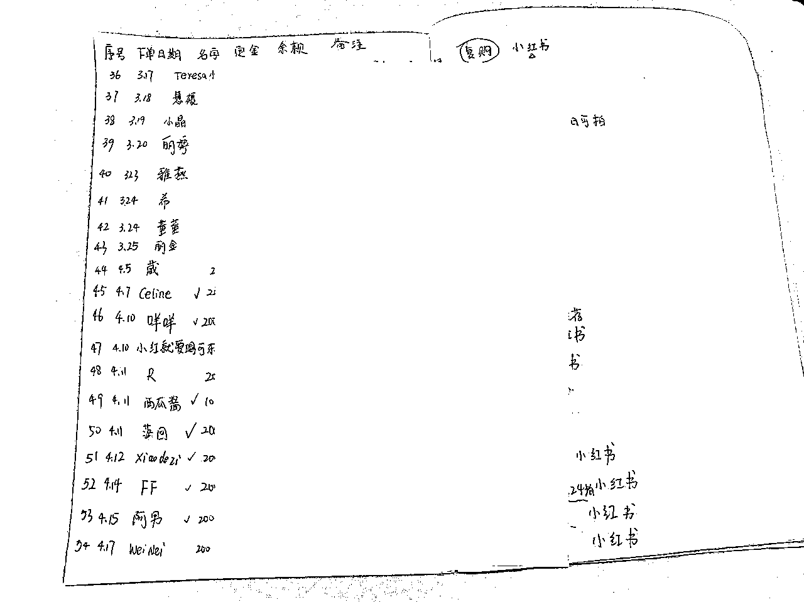
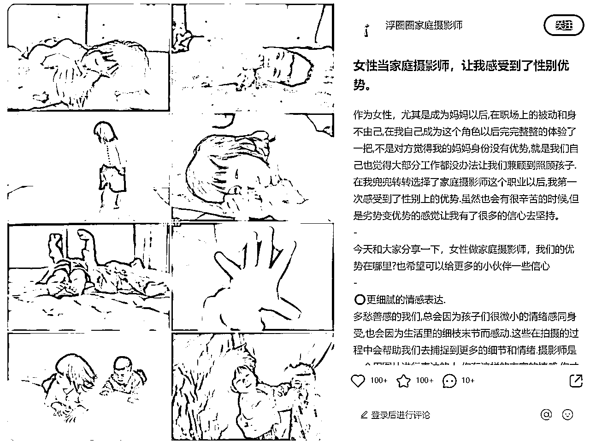
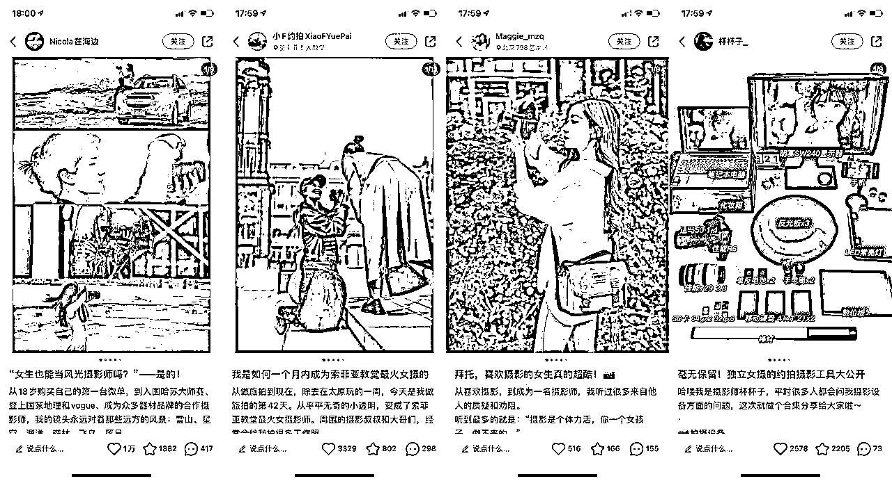
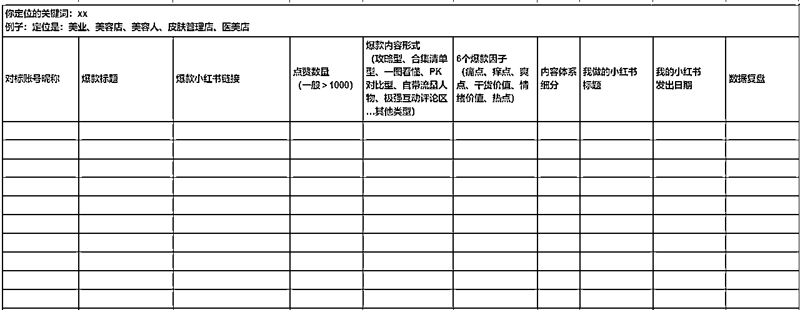
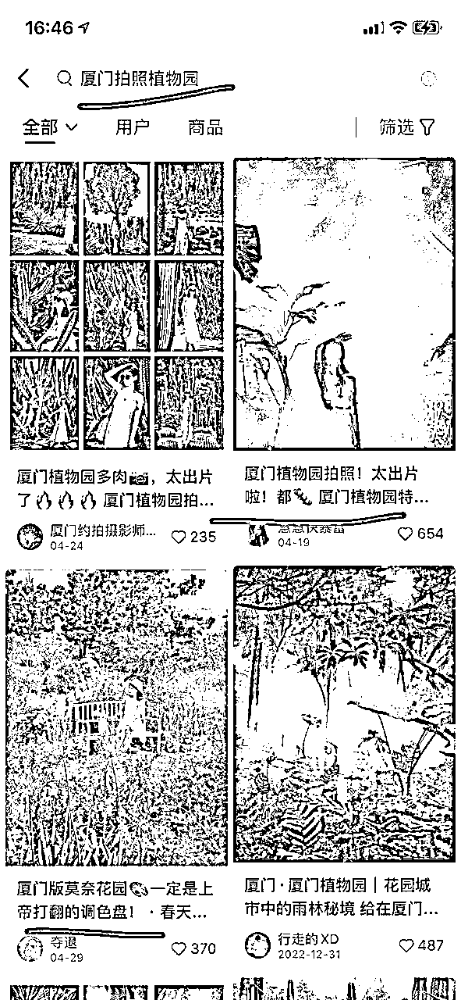

来源：https://n28vbku1px.feishu.cn/docx/YsRgdNsJvoAYY3x7gUCcsnudnPc
hi，这里是专注小红书IP全案100个的文静。这份IP复盘是来自全职做本地旅拍摄影师荷娜，从3月份开始做小红书，虽受限于同城本地的精准流量，涨粉1000+，每月收入近万元

接下来，一起来看看她的小红书IP全案~
我在问荷娜为什么要做这个（本地旅拍摄影师）定位时，她说这是她很喜欢做的事情，哪怕不做小红书不做自媒体，也想做的事情。果然热爱可抵岁月漫长
所以文静建议她的定位：主要是为旅行者和当地居民提供个性化、原创的旅游摄影服务。对当地文化和景观有深入的了解，同时在小红书平台上分享摄影作品、创作过程、技巧和经验
变现方式：主要向用户提供旅拍摄影服务，如旅游摄影、情侣照、家庭照、儿童照、孕照等。同时也可以通过本地品牌合作、本地广告投放等方式来获得更多的商业价值
在确定定位和变现方式之后，也给确定了她要吸引的客户群体、解决方案，以及她自己本人需提升的IP核心竞争力

包括了昵称、头像、个人简介、背景墙
个人昵称：xx城市摄影师+人名。简洁易记的昵称，方便用户记住和查找。又与定位相关：例如城市、拍摄风格等。例如：某某旅拍、某某摄影、某某拍客等
头像：真人出镜实拍，更有IP信任感
个人简介：直接介绍你提供的服务内容、服务理念和客户评价
另外还可以写：你的专业领域和摄影技能：例如，你可以描述你的专业领域和擅长的摄影技术，以及你对摄影的热爱和态度。突出你的拍摄风格。展示你的作品和经验
首先必须认识到选题决定了你的流量上限，如果你一开始找的对标选题，就是只有几十个赞，那大概率，你模仿写出的笔记，也肯定无法爆到哪里去，因为你的前辈对标已经告诉了你，最好的数据量，就是这了。所以先找到点赞1000+的对标选题（常规类目），这个超级重要！
那如果在起号阶段，即一万粉之前（常规类目），你的第一版小红书的内容体系搭建，至少要包含这3个内容，而且比例是271
作用：起号养号更快，数据更好
比如，举例：→摄影师需要下载的软件合集、100个日本摄影师学习


比如举例：
分享自己摄影作品，吸引到该领域的潜在客户，并向用户介绍当地的儿童拍摄场所。例：100个城市儿童摄影、100个城市全家福、100个城市周岁礼…
正文内容：可以包括但不限于：
选题举例：可以包括但不限于：
分享自己拍摄的带有本地特色的照片，并结合景点介绍，帮助用户更好地了解当地的文化、历史和风俗习惯。甚至是本地美食和购物推荐
分享自己的摄影技巧，如如何拍摄清晰、生动的照片，如何捕捉瞬间，如何利用光线等，帮助用户在旅行中拍出更好的照片
报道自己参与的线下旅拍活动，并分享活动的照片和感受，吸引更多用户参与，提升自己在该领域的影响力
分享自己喜欢的摄影器材、使用心得、购买渠道等信息，帮助摄影初学者更好地了解和选购器材
作用：为了更高收入更高客单的转化，外显的就是出现真实的人样、真实的线下场景（比如真人拍摄过程、公司工作室、餐厅公园等）。内显，就是内容要写出你对该行业领域的深度思考，深度认知，避坑指南等等
举例：女性家庭摄影师的优势


1、每天都刷小红书，收藏可以参考的内容，选题也及时登记在选题库里

2、爆款标题两两相串法
把2条爆款标题，两两相串，比如搜索厦门拍照植物园

图片组成新的标题：厦门植物园拍照!上帝打翻的调色盘！太出片啦！
小红书的笔记标题、封面图、正文内容，是由一个个定位产品下的关键词长尾词，组成的。你可以搜小红书的下拉框，免费找到关键词长尾词，也可以买千瓜、灰豚等网站平台来查
账号的目标一开始是奔着引流去的，接商业广告为次要。所以大部分的笔记内容尾页，都是直接发了引流钩子
引流钩子用了成本最低的X本电子书，这样成本可控且相对安全
用粉丝感兴趣的文档，引导粉丝到群聊，然后微信小号在群里发微信号，想要的就直接加。也加上了产品服务合集，在前端就用一部分内容，来筛选了用户
1、打卡城市99个必拍照景点及姿势合集
2、跟拍旅拍优惠券200元


目前还没有计划下一步矩阵号玩法。因为荷娜作为单独一个人，从0开始做这起这个旅拍小事业，已经是很棒的开始。
为每个普通人在小红书找到自己的新生态位，新的商业变现，而共喜恭喜~
如果大家对个人各行各业的小红书IP，更感兴趣，欢迎跟文静说~文静先优先吭哧地复盘写出来~